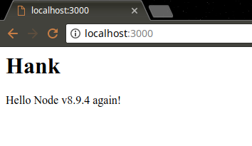
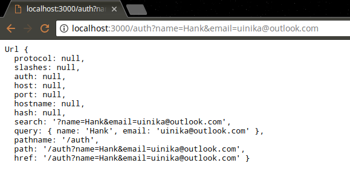
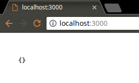

NodeJS 开源项目于 2009 年由 Google Brain 团队的软件工程师 Ryan Dahl 发起创建，后被美国云计算企业 Joyent 招入麾下，2015 年后正式被 NodeJS 基金会 接管，三星公司于 2016 年完成了对 Joyent 的收购。经过将近 10 年的发展，NodeJS 已经成为现代化前端开发过程中不可或缺的基础架构，即可以作为页面渲染的分布式服务器，也可以作为前端自动化的宿主环境。

本文基于笔者在 2015 年所写的一篇读书笔记整理，彼时 node.js 的版本号还停留在v0.12.x，社区也还未完成与 io.js 的最终合并，文中出现的部分 API 时至今日已经被废弃或者迁移。但是这些 API 层面的变化都可以对照 《官方文档》找到相应说明以及替代 API，总体上并不会影响通过本文快速了解 NodeJS 的全套技术栈特性。
简单介绍
NodeJS 是让 JavaScript 运行在浏览器之外的平台，它实现了诸如文件系统、模块、包、操作系统 API、网络通信等原生 JavaScript 没有或不完善的功能。并且内建了对 HTTP 服务器的支持，充分考虑实时响应、超大规模数据要求下架构的可扩展性。NodeJS 摒弃依靠多线程实现高并发的设计思路，采用了单线程、异步式 I/O、事件驱动式程序设计模型，从而带来了可观的性能提升。
CommonJS 规范
CommonJS 规范试图拟定一套完整的 JavaScript 规范，以弥补普通应用程序所需 API，包括模块(modules)、包(packages)、系统(system)、二进制(binary)、控制台(console)、编码(encodings)、文件系统(filesystems)、套接字(sockets)、单元测试(unit testing)等部分。
NodeJS 和 MongoDB 都是 CommonJS 的实现，由于这几种技术都处于快速变化期，所以它们并不完全遵循 CommonJS 规范。
NodeJS 的特点
异步式 I/O
NodeJS 使用的是单线程模型，对于所有 I/O 都采用异步式的请求方式，避免了频繁的上下文切换。
多线程在处理耗时较长的 SQL 语句时，线程会阻塞等待结果返回。高并发访问的情况下，一方面线程长期阻塞等待，另一方面为应付新请求需要不断增加线程，线程的增加会占用 CPU 时间处理内存上下文切换，因此会浪费大量 CPU 资源。
这种场景下，NodeJS 不会等待结果返回，而是直接继续执行后续语句，直到进入事件循环。当数据库查询结果返回时，会将事件发送到事件队列，等到线程进入事件循环以后，才会调用之前的回调函数继续执行后续逻辑。
事件驱动
NodeJS 在执行的过程中会维护一个事件队列，程序在执行时进入事件循环等待下一个事件到来，每个异步式 I/O 请求完成后会被推送到事件队列，等待程序进程进行处理。
NodeJS 的异步机制是基于事件的，所有磁盘 I/O、网络通信、数据库查询都以非阻塞的方式进行，返回的结果由事件循环来处理。
NodeJS 进程在同一时刻只会处理一个事件，完成后立即进入事件循环检查并处理后面的事件，让 CPU 和内存在同一时间集中处理一件事，同时尽可能让耗时的 I/O 操作并行执行。
NodeJS 与 PHP+Nginx 性能对比
在 3000 并发连接 30 秒的测试下，输出hello world请求：
- PHP 每秒响应请求数为
3624，平均每个请求响应时间为0.39秒； - NodeJS 每秒响应请求数为
7677，平均每个请求响应时间为0.13秒。
同样的测试对 MySQL 的查询操作：
- PHP 每秒响应请求数为
1293，平均每个请求响应时间为0.82秒； - NodeJS 每秒响应请求数为
2999，平均每个请求响应时间为0.33秒。
NodeJS 架构简介
NodeJS 除了使用 V8 作为 JavaScript 引擎以外，还使用高效的libev和libeio库支持事件驱动和异步式 I/O（Windows 下使用了 IOCP），并在此基础上抽象出libuv层。

快速开始
新建 1 个 test.js 文件，编写代码console.log('Hello NodeJS!');，然后保存文件。打开命令行执行node test.js语句，得到结果如下：
1 | ➜ node test.js |
查看帮助
通过在控制台输入node --help命令获得关于 node 命令行的帮助信息。
1 | ➜ blog git:(master) ✗ node --help |
REPL 模式
输入-求值-输出循环（Read-eval-print loop）可直接输入并运行 JavaScript 代码，在控制台执行node即可进入该模式，连续按 2 次Ctrl+C可退出该模式。
1 | ➜ blog git:(master) ✗ node |
如果运行的是 JavaScript 函数，会在命令行最后显示该函数返回值，上面例子中
undefined是console.log()方法的返回值。
建立 HTTP 服务器
新建 app.js 文件，然后编写如下代码：
1 | var http = require("http"); |
运行node app.js命令，提示信息如下：
1 | ➜ /workspace node app.js |
打开浏览器访问http://127.0.0.1:5000。

服务启动后，NodeJS 会一直监听
5000端口，按下Ctrl+C可以结束 HTTP 监听服务。
使用 supervisor 或 nodemon
NodeJS 只在第 1 次执行时解析脚本，以后都会直接访问内存，从而避免重复载入。为方便开发和调试，可以通过安装supervisor或者nodemon来实时载入代码。
- 首先，执行命令
npm install -g supervisor nodemon安装 Supervisor 或者 Nodemon 模块到当前目录。 - 然后，使用命令
supervisor app.js或nodemon app.js启动服务。 - 最后，
app.js中代码被改动时，运行的脚本会被终止，然后重新启动。
生产环境下推荐使用商业化支持更加良好的pm2进程管理工具。
异步式 I/O 与事件编程
NodeJS 最大特点是异步式 I/O（或者非阻塞 I/O）与事件紧密结合的编程模式，该模式与传统同步式 I/O 的线性编程思路有很大不同，因为控制流需要靠事件和回调函数来组织，一个逻辑要拆分为若干个单元。
- 同步式 IO（阻塞式 IO）：线程在执行中如果遇到磁盘读写、网络通信、长事务查询等 I/O 操作，通常需要耗费较长时间，这时操作系统会剥夺该线程 CPU 控制权，将资源让给其它工作线程。当 I/O 操作完毕时，操作系统解除该线程阻塞状态，恢复 CPU 控制权，使其继续执行。

- 异步式 IO（非阻塞式 IO）：当线程遇到 I/O 操作时，不会以阻塞方式等待 I/O 操作完成，而只是将 I/O 请求发送给操作系统，然后继续执行下一条语句。当操作系统完成 I/O 操作时，以事件形式通知执行 I/O 操作的线程，线程会在特定时间处理该事件。处理异步 I/O 的时候，线程必须有事件循环，不断检查有无未处理的事件，然后依次进行处理。

多线程同步式 IO 与单线程异步式 IO 的比较
- 阻塞模式下，1 个线程只能处理 1 项任务，提高吞吐量必须依靠多线程。非阻塞模式下，1 个线程永远在执行操作，该线程 CPU 占用率保持 100%，I/O 完成时以事件方式进行通知。
- 阻塞模式下，多线程能够提高系统吞吐量，因为 1 个线程阻塞时还有其它线程在工作，多线程可以使 CPU 资源不被阻塞中的线程浪费。非阻塞模式下，线程不会被 I/O 阻塞，永远在利用 CPU。
异步式 I/O 的优缺点
异步式 I/O 优点在于免去了多线程的开销。对操作系统来说，创建线程的代价十分昂贵（需要给分配内存、列入调度，线程切换时需要执行内存换页、清空 CPU 缓存，切换回来的时候再重新从内存中读取数据）。
异步式编程缺点在于不符合一般的程序设计思维，容易让控制流变得晦涩难懂，给编码调试都带来一定困难。
| 同步式 I/O（阻塞式） | 异步式 I/O（非阻塞式） |
|---|---|
| 利用多线程提供吞吐量 | 单线程即可实现高吞吐量 |
| 通过事件片分割和线程调度利用多核 CPU | 通过功能划分利用多核 CPU |
| 需要由操作系统调度多线程使用多核 CPU | 可以将单进程绑定到单核 CPU |
| 难以充分利用 CPU 资源 | 可以充分利用 CPU 资源 |
| 内存轨迹大，数据局部性弱 | 内存轨迹小，数据局部性强 |
| 符合线性的编程思维 | 不符合传统编程思维 |
异步与同步 API
NodeJS 异步读取文件的例子：readFile()函数调用时只是将异步式 I/O 请求发送给操作系统，然后立即返回并执行后面的语句，执行完后进入事件循环监听事件。当 fs 接收到 I/O 请求完成的事件，事件循环会主动调用回调函数以完成后续工作。因此会先看到结束！再看到文件内容。
1 | var fs = require("fs"); |
1 | ➜ node app.js |
NodeJS 同步读取文件的例子：readFileSync()函数以文件名作为参数，阻塞等待读取完成后，将文件内容作为返回值赋给变量data，接下来控制台输出data的内容，最后输出结束！。
1 | var fs = require("fs"); |
1 | ➜ node app.js |
NodeJS 并不是所有 API 都提供同步和异步版本，NodeJS 不鼓励使用同步 I/O。
异步事件
NodeJS 异步 I/O 操作完成时会发送一个事件到事件队列，该事件由EventEmitter对象提供。前面例子中readFile()和createServer()的回调函数都是通过EventEmitter实现，下面例子简要说明了EventEmitter的用法：
1 | var EventEmitter = require("events").EventEmitter; |
1 | ➜ node app.js |
NodeJS 事件循环机制
NodeJS 程序从事件循环开始到结束，所有逻辑都是事件回调函数。NodeJS 从第 1 个事件的回调函数开始进入事件循环，始终处于事件循环中。
事件回调函数在执行的过程中，可能会发出 I/O 请求或直接发射(emit)事件，执行完毕后再返回事件循环，事件循环会检查事件队列中有没有未处理的事件，直到程序结束。
NodeJS 事件循环对开发者不可见，由libev库实现并支持多种类型事件(ev_io、ev_timer、ev_signal、ev_idle等)。NodeJS 中这些事件均被EventEmitter封装，libev 事件循环的每次迭代在 NodeJS 中就是一次Tick，libev不断检查是否有活动的、可供检测的事件监听器，当检测不到时将退出事件循环并结束进程。
Module 模块
模块是 NodeJS 应用程序的基本组成部分，文件与模块一一对应，一个 NodeJS 文件就是一个模块，该文件可以是 JavaScript 代码、JSON、编译过的 C/C++扩展。NodeJS 提供exports对象来公开模块，以及require对象获取模块。
创建模块
创建 1 个module.js文件。
1 | // module.js |
相同目录下再创建getmodule.js文件。
1 | // getmodule.js |
命令行执行结果：
1 | ➜ node getmodule.js |
单次加载
require不会重复加载模块，无论调用多少次require，获得的模块都是同一个。
1 | // loadmodule.js |
输出结果为"Hello Uinika"，因为变量helloHank和helloUinika指向同一个实例，所以helloHank.setName()的结果被helloUinika.setName()覆盖，最终输出结果由后者决定。
1 | ➜ node loadmodule.js |
覆盖 exports
接下来将 1 个对象封装到模块中。
1 | //singleobject.js |
如果直接通过require('./single object').Hello获取Hello对象会显得冗余，可使用如下方法进行简化。
1 | //hello.js |
模块接口唯一变化是使用module.exports = Hello代替了exports.Hello= Hello，外部引用该模块时，接口对象就是输出的Hello对象本身，而非之前的exports。
1 | // gethello.js |
exports 是一个普通的空对象{}，通过它在模块内部建立访问接口。但不能通过对exports直接赋值代替对module.exports赋值，exports实际上只是与module.exports指向同一对象，它本身会在模块执行结束后释放，而module不会，因此只能通过指定module.exports来改变访问接口。
Package 包
包在模块基础上更进一步抽象，NodeJS 包类似于 Java 类库，它将某个独立功能封装起来，用于发布、更新、依赖管理、版本控制。NodeJS 根据 CommonJS 规范实现了包机制，通过 npm 来解决包的发布和获取需求。
NodeJS 包是一个目录，其中包含一个说明文件package.json，严格符合 CommonJS 规范的包应具备这些特征：package.json必须放在包的根目录、二进制文件保存在bin目录、JavaScript 代码保存在lib目录、文档放置在doc目录、单元测试保存在test目录。
作为文件夹的模块
最简单的包，就是一个作为文件夹的模块。下面的例子中，首先建立名为mypackage的文件夹，并在其中创建index.js文件。
1 | // mypackage/index.js |
然后在mypackage文件夹外建立一个getpackage.js文件。
1 | // getpackage.js |
通过上面的操作就可以将mypackage文件夹封装为 1 个包，包通常是许多模块的集合，并在模块基础上提供更高层的抽象。
包描述文件 package.json
通过定制package.json，可以创建更复杂、更完善、更符合规范的包。接下来在mypackage文件夹下，继续创建一个package.json描述文件。
1 | { |
然后将index.js重命名为interface.js并放入lib子文件夹，最后以同样方式调用该包，得到的结果相同：
1 | ➜ node getpackage.js |
NodeJS 调用某个包时，会首先检查包中
package.json文件的main字段，如果package.json或main字段不存在，就会默认尝试寻找index.js或index.node作为包的入口点。
package.json是 CommonJS 规范的包描述文件，完全符合规范应包含如下字段：
name：包的名称(必须是唯一，由小写英文字母、数字和下划线组成，不能包含空格)。description：包的简要描述。version：符合语义化版本识别规范的版本字符串。keywords：关键字数组，通常用于搜索。maintainers：维护者数组(每个元素包含 name、email、web 字段)。contributors：贡献者数组(格式与 maintainers 相同)。bugs：提交 bug 的地址，可以是网址或者电子邮件地址。licenses：许可证数组(每个元素包含 type、url 字段)。repositories：仓库托管地址数组(每个元素包含 type、url、path 字段)。dependencies：包的依赖，一个关联数组，由包名称和版本号组成。
包管理器 npm
npm 是 NodeJS 官方提供的包管理工具，可用于 NodeJS 包的发布、传播、依赖控制，npm 拥有本地和全局两种安装模式。
本地模式
npm 默认会从Naughty programmer's madness(﹏)搜索并下载依赖包，并将其安装至当前目录的node_modules子目录下。require加载模块时会尝试搜寻node_modules子目录，因此本地模式安装的包可以被直接引用。
命令格式：npm [install/i] [package_name]
npm 会自动解析包的依赖并自动进行相应下载。
全局模式
npm 也可以通过全局模式进行安装，但是该模式下安装的包不能直接在 JavaScript 文件中使用。
命令格式：npm [install/i] -g [package_name]
全局链接
npm 还可以在本地和全局包之间创建符号链接，从而打破全局模式安装的包不能直接通过 require 使用的限制，但是该命令不支持 Windows。
命令格式：npm link (in package dir)
发布 npm 包
npm 可以方便地发布一个包，这里可以使用npm init根据交互式问答产生一个符合标准的 package.json。
1 | ➜ npm init |
接下来需要通过npm adduser获取一个帐号（需要提前在 npm 官网注册帐号）。
1 | ➜ npm adduser |
完成后可以使用npm whoami测试是否正确创建了帐号。
1 | ➜ npm whoami |
如果包将来有更新，只需要修改package.json文件中的version字段，然后重新使用npm publish命令即可。如果对已经发布的包不满意，可以使用npm unpublish命令取消发布。
1 | ➜ npm publish |
命令行调试
NodeJS 支持命令行下的单步调试。
命令格式：node inspect app.js
1 | ➜ node inspect app.js |
NodeJS 调试命令：
run 执行脚本，在第一行暂停 restart 重新执行脚本 cont,c 继续执行，直到遇到下一个断点 next,n 单步执行 step,s 单步执行并进入函数 out,o 从函数中步出 setBreakpoint(),sb() 在当前行设置断点 setBreakpoint('f()'),sb(...) 在函数 f 的第一行设置断点 setBreakpoint('script.js', 20),sb(...) 在 script.js 的第 20 行设置断点 clearBreakpoint,cb(...) 清除所有断点 backtrace,bt 显示当前的调用栈 list(5) 显示当前执行到的前后 5 行代码 watch(expr) 把表达式 expr 加入监视列表 unwatch(expr) 把表达式 expr 从监视列表移除 watchers 显示监视列表中所有的表达式和值 repl 在当前上下文打开即时求值环境 kill 终止当前执行的脚本 scripts 显示当前已加载的所有脚本 version 显示 V8 的版本
远程调试
V8 引擎的调试功能基于 TCP 协议，因此 NodeJS 可以轻松实现远程调试。
- 脚本会正常执行不会暂停，执行过程中调试客户端可以连接至调试服务器。
node --debug[=port] script.js - 调试服务器启动后将立刻暂停执行脚本，等待调试客户端连接。
node --debug-brk[=port] script.js
第 3 方工具调试
- Eclipse 下使用插件
Google Chrome Developer Tools。 - Node 在线调试工具node-inspector。
Global 模块
浏览器 JavaScript 当中window是全局对象，NodeJS 中全局对象是global，global最根本的作用是作为全局变量的宿主（即所有的全局变量都是global对象的属性），因此在所有模块中都可以直接使用而无需包含。
NodeJS 中不可能在代码最外层定义全局变量，因为所有自定义代码都是属于当前模块的， 而模块本身不是 NodeJS 最外层的上下文。
尽量显式的使用
var、let、const关键字声明变量，避免直接声明将变量引入全局，污染命名空间，提高耦合风险。
global：全局变量的宿主。 Class: Buffer：用来与 TCP 数据流、文件系统操作等八位二进制流进行交互的类型。 __filename：表示当前正在执行的脚本的文件名。 __dirname：表示当前执行脚本所在的目录。
console： debug 信息打印控制台。 require()：获取 NodeJS 模块。 exports()：导出 NodeJS 模块，该方法是引用了module.exports的快捷类型。 module：当前 NodeJS 模块的引用。 process：用于描述当前 NodeJS 进程状态的对象。
setImmediate(callback[, ...args]) / clearImmediate(immediateObject)：将一些需要长时间运行的操作放在回调函数内，在浏览器完成后面的其他语句后，立刻执行该回调函数。 setInterval(callback, delay[, ...args]) / clearInterval(intervalObject) ：在指定的毫秒数后重复执行指定回调函数，除非显示调用clearInterval关闭。 setTimeout(callback, delay[, ...args]) / clearTimeout(timeoutObject)：在指定的毫秒数后执行一次指定的回调函数。
Process 模块
process是全局变量(即 global 对象的属性)，用于描述当前 NodeJS 进程状态。
process.argv是命令行参数数组，第 1 个元素是 node，第 2 个元素是脚本文件名，从第 3 个元素开始每个元素是 1 个运行参数。
1 | ➜ /workspace node app.js 1985 name=Hank --v uinika |
process.stdout是标准输出流，通常使用 console.log()向标准输出打印字符，而 process.stdout.write()函数则提供了更为底层的接口。
process.stdin是标准输入流，初始时是被暂停的，要想从标准输入读取数据，必须恢复流，并手动编写流的事件响应函数。
1 | process.stdin.resume(); |
1 | ➜ /workspace node app.js |
process.nextTick(callback)的功能是为事件循环设置一项任务，NodeJS 会在下次事件循环调响应时调用 callback。process.nextTick()可以把复杂的工作拆散，变成一个个较小的事件。
NodeJS 适合 I/O 密集型的应用，不适合计算密集型应用。如果 1 个 NodeJS 进程只有 1 条线程，因此在任何时刻都只有 1 个事件在执行。如果该事件占用大量 CPU 时间，执行事件循环中的下个事件需要等待很久，因此 NodeJS 的一个编程原则就是尽量缩短每个事件的执行时间。
1 | function doSomething(args, callback) { |
上面代码在调用doSomething()时会先执somethingComplicated()，然后立即调用回调函数，在onEnd()中又会执行compute()。
接下来改写上面的程序，将耗时的操作拆分为 2 个事件，减少每个单独事件的执行时间，提高事件响应速度：
1 | function doSomething(args, callback) { |
Console 模块
console 用于提供控制台标准输出。
console.log()：向标准输出流打印字符并以换行符结束(如果只有 1 个参数，则输出该参数的字符串形式；如果有 2 个参数，则以类似于 C 语言printf()的格式化输出)。
1 | console.log("Hello Node"); |
1 | ➜ node app.js |
console.error()：与console.log()的用法相同，只是向标准错误流进行输出。
console.trace()：向标准错误流输出当前的调用栈。
1 | ➜ node app.js |
Util 模块
util 提供常用函数集合，用于弥补核心 JavaScript 功能方面的不足。
util.inherits(constructor, superConstructor)用于实现对象之间的原型继承。
1 | var util = require("util"); |
1 | ➜ node app.js |
Sub只继承Base在原型中定义的函数，而构造函数内部创建的base属性和sayHello()函数都没有被 Sub 继承。而原型中定义的属性不会被console.log()作为对象属性输出。现在如果去掉 objSub.sayHello()的注释，将会出现如下错误：
1 | ➜ node app.js |
util.inspect(object,[showHidden],[depth],[colors])用于将任意对象转换为字符串，通常用于调试和错误输出。
- 参数 object：需要转换的目标对象。
- 参数 howHidden：如果值为 true，将会输出更多隐藏信息。
- 参数 depth：表示最大递归的层数，默认递归 2 层，指定为 null 将完整遍历对象。
- 参数 color：如果为 true，输出格式以 ANSI 颜色编码，通常用于控制台显示效果。
util.inspect并非直接将对象转换为字符串，即使该对象定义了toString()方法也不会被调用。
1 | var util = require("util"); |
1 | ➜ node app.js |
Events 模块
events是 NodeJS 最重要的模块，因为 NodeJS 本身就是基于事件式的架构，该模块提供了唯一接口，所以堪称 NodeJS 事件编程的基石。events模块不仅用于与下层的事件循环交互，还几乎被所有的模块所依赖。
events模块只提供 1 个events.EventEmitter对象，EventEmitter对象封装了事件发射和事件监听器。每个EventEmitter事件由 1 个事件名和若干参数组成，事件名是 1 个字符串。EventEmitter对每个事件支持若干监听器，事件发射时，注册至该事件的监听器依次被调用，事件参数将作为回调函数参数传递。
下面例子中，emitter为事件targetEvent注册 2 个事件监听器，然后发射targetEvent事件，结果 2 个事件监听器的回调函数被依次先后调用。
1 | var events = require("events"); |
1 | ➜ /workspace node app.js |
EventEmitter 常用 API
EventEmitter.on(event, listener)：为指定事件注册监听器，接受 1 个字符串事件名 event 和 1 个回调函数 listener。EventEmitter.emit(event,[arg1],[arg2],[...])：发射 event 事件，传递若干可选参数到事件监听器的参数列表。EventEmitter.once(event, listener)：为指定事件注册 1 个单次监听器，即该监听器最多只会触发一次，触发后立刻解除。EventEmitter.removeListener(event, listener)：移除指定事件的某个监听器，listener 必须是该事件已经注册过的监听器。EventEmitter.removeAllListeners([event])：移除所有事件的所有监听器，如果指定 event，则移除指定事件的所有监听器。
EventEmitter包含 1 个定义错误语义的error事件，通常遇到异常时会发射error事件。当error被发射时，如果没有相应的监听器，NodeJS 会将其当作异常，退出程序并打印调用栈。通常情况下，需要为会发射error事件的对象设置监听器，避免程序遇到错误后崩溃。
1 | var events = require("events"); |
1 | ➜ node app.js |
继承 EventEmitter
通常情况下，不会直接使用EventEmitter，而是在对象中继承，这样做的原因有 2 点：
- 符合语义，事件的监听和发射应该作为 1 个对象的方法。
- JavaScript 基于原型继承，支持部分多重继承，继承
EventEmitter不会打乱原有继承关系。
包括
fs、net、http在内，只要是支持事件响应的核心模块都是EventEmitter的子类。
File System 模块
fs模块封装了文件操作，提供了文件读取、写入、更名、删除、遍历、链接等 POSIX 文件系统操作，该模块中所有操作都提供了异步和同步 2 个版本。
fs.readFile(filename,[encoding],[callback(err,data)])用于读取文件，第 1 个参数filename表示要读取的文件名。第 2 个参数encoding表示文件的字符编码，第 3 个参数callback是回调函数，用于接收文件内容。
回调函数提供err和data两个参数，err表示有无错误发生，data是文件内容。如果指定encoding，data将是 1 个解析后的字符串，否则data将会是以Buffer`形式表示的二进制数据。
下面的例子当中，从content.txt(包含汉字"遵义会议")中读取数据，不指定编码将输出乱码。
1 | var fs = require("fs"); |
1 | ➜ node app.js |
指定encoding编码后，文本正常编码并输出。
1 | var fs = require("fs"); |
1 | ➜ node app.js |
NodeJS 异步编程通常以函数最后 1 个参数作为回调，通常 1 个函数只有 1 个回调。回调函数第 1 个参数是
err，如果没有发生错误，err值为null或undefined；如果有错误发生，err通常是Error对象的实例。
fs.readFileSync()
NodeJS 提供的fs.readFileSync()函数是readFile()的同步版本，两者接受的参数相同，读取到的文件内容会以函数返回值形式返回。如果有错误发生fs将会抛出异常，需要使用try...catch捕捉并处理异常。
与同步 I/O 函数不同，NodeJS 中异步函数大多没有返回值。
fs.open()
fs.open(path,flags,[mode],[callback(err,fd)])封装了 POSIX 的open()函数，与 C 语言标准库中fopen()函数类似。该函数接受 2 个必选参数，第 1 个参数path为文件路径，第 2 个参数flags代表文件打开模式，第 3 个参数mode用于创建文件时给文件指定权限（默认 0666），第 4 个参数是回调函数，函数中需要传递文件描述符fd。
fs.read()
fs.read(fd,buffer,offset,length,position,[callback(err,bytesRead,buffer)])封装了 POSIX 的 read 函数，相比fs.readFile()提供了更底层的接口。
fs.read()的功能是从指定的文件描述符 fd 中读取数据并写入buffer指向的缓冲区对象。offset是buffer的写入偏移量。length是要从文件中读取的字节数。position是文件读取的起始位置，如果position的值为null，则会从当前文件指针的位置读取。回调函数传递bytesRead和buffer，分别表示读取的字节数和缓冲区对象。
下面的例子综合使用了fs.open()和fs.read()：
1 | var fs = require("fs"); |
1 | ➜ node app.js |
Http 模块
NodeJS 标准库提供的http模块封装了一个高效的 HTTP 服务器http.Server和一个简易的 HTTP 客户端http.request。
http模块中的 HTTP 服务器对象，核心由 NodeJS 底层依靠 C++实现，接口使用 JavaScript 封装，兼顾了高性能与简易性。
下面代码中，http.createServer()创建了一个http.Server实例，并将一个匿名函数作为 HTTP 请求处理函数。该函数接受两个参数，分别是请求对象 req和响应对象res。函数体内，res显式的写入响应代码200（表示请求成功），并指定了响应头和响应体，然后通过res.end()结束并发送。最后调用listen()函数，启动服务器并监听3000端口。
1 | var http = require("http"); |
1 | ➜ node app.js |
http.Server 的事件
http.Server是基于事件的 HTTP 服务器，所有请求都被封装为独立的事件，开发者只需要对相应事件编写函数即可实现 HTTP 服务器的所有功能。它继承自EventEmitter，主要提供了以下几个事件：
request：当客户端请求到来时该事件被触发，提供 2 个参数 req 和 res，分别是 http.ServerRequest 和 http.ServerResponse 的实例，表示请求和响应信息。connection：当 TCP 连接建立时该事件被触发，提供 1 个参数 socket，是 net.Socke 的实例。connection 事件的粒度要大于 request，因为客户端在 Keep-Alive 模式下可能会在 1 次连接内发送多次请求。close：当服务器关闭时，该事件被触发。
事件request较常用，因此http提供了快捷方法http.createServer([requestListener])来创建 HTTP 服务器，其中requestListener作为request事件的监听函数。
1 | var http = require("http"); |

除此之外还有
checkContinue、upgrade、clientError事件，通常不需要开发人员关心，只有在实现复杂 HTTP 服务器时才会使用。
http.serverRequest
http.ServerRequest是 HTTP 请求的信息，通常由http.Server的request事件发送，作为第 1 个参数传递，通常简称request或req，ServerRequest提供了如下属性：
| 名 称 | 含 义 |
|---|---|
complete |
客户端请求是否已经发送完成 |
httpVersion |
HTTP 协议版本，通常是1.0或1.1 |
method |
HTTP 请求方法，如GET、POST、PUT、DELETE等 |
url |
原始的请求路径，例如/static/avatar.png或/user?name=Hank |
connection |
当前 HTTP 连接套接字，为net.Socket的实例 |
socket |
connection属性的别名 |
client |
client属性的别名 |
trailers |
HTTP 请求尾 |
HTTP 请求分为请求头、请求体两部分，请求体可能相对较长，需要一定时间传输，因此http.ServerRequest提供以下 3 个事件用于控制请求体传输。
data：当请求体数据到来时事件被触发，该事件提供 1 个 chunk 参数来表示接收到的数据。如果该事件没有被监听，那么请求体将会被抛弃，该事件可能会被调用多次。end：当请求体数据传输完成时被触发，此后将不会再有数据到来。close：当前用户请求结束时被触发，与 end 不同之处在于即使用户强制终止传输，该事件依然会被调用。
获取 GET 请求
GET 请求的参数放置在查询参数中，需要使用 url 模块的 parse 函数手动进行解析。
1 | var http = require("http"); |

获取 POST 请求
POST 请求的内容全部都在请求体中，NodeJS 默认不会解析请求体，需要借助querystring的parse()方法进行解析。但这种方式不可用于生产环境，因为存在严重的效率和安全问题。
1 | var http = require("http"); |

http.ServerResponse
该对象封装了返回给客户端的信息，通常简称为response或res，主要有 3 个重要的成员函数，用于返回响应头、响应内容、结束请求。
response.writeHead(statusCode,[headers])：向请求的客户端发送响应头。statusCode是 HTTP 状态码，headers对象表示响应头的每个属性。该函数在 1 个请求内最多只能调用`次，如果不显式调用，则会自动生成一个响应头。response.write(data, [encoding])：向请求的客户端发送响应内容。data是Buffer或字符串，表示要发送的内容。如果data是字符串，那么需要通过encoding说明其编码方式(默认是 utf-8)。在response.end()调用之前，response.write()可以被多次调用。response.end([data],[encoding])：结束响应，告知客户端全部响应已经完成。当所有响应内容发送完毕后，该函数必须被调用 1 次。接受 2 个可选参数，意义与response.write()相同。如果不调用该函数，客户端将永远处于等待状态。
HTTP 客户端
http 模块提供了 2 个函数http.request()和http.get()，功能是作为客户端向 HTTP 服务器发起请求。
http.request()
http.request(options,callback)发起 HTTP 请求，接受 2 个参数，option是一个类似关联数组的对象，表示请求的参数，callback是请求的回调函数；其中option拥有如下常用参数：
host：请求网站的域名或 IP 地址。port：请求网站的端口，默认 80。method：请求方法，默认是 GET。path：请求是相对于根的路径(默认为"/"，包含 QueryString，例如/search?hank=uinika)。headers：一个关联数组对象，为请求头的内容。
1 | var http = require("http"); |
http.get()
http 模块提供http.get()来更加简便的处理 GET 请求，这是http.request()的简化版本，区别在于http.get()自动将请求方法设置为GET，同时不需要手动调用req.end()。
1 | var http = require("http"); |
http.ClientRequest
http.ClientRequest是http.request()或http.get()方法返回产生的对象，表示已经产生的 HTTP 请求。提供一个response事件(即http.request()或http.get()第 2 个参数指定的回调函数所绑定对象)，也可以显式绑定该事件的监听函数。
1 | var http = require("http"); |
同http.ServerResponse一样，http.ClientRequest也提供write()和end()函数，用于向服务器发送请求体，通常用于POST、PUT等操作，操作结束后必须手动调用 end 函数通知服务器，否则请求无效。http.ClientRequest还提供了以下函数：
request.abort()：终止正在发送的请求。request.setTimeout(timeout,[callback])：设置请求超时时间，timeout为毫秒数。请求超时后callback会被调用。
还有 request.setNoDelay()、request.setSocketKeepAlive()等函数，可查询 NodeJS 文档。
http.ClientResponse
http.ClientResponse与http.ServerRequest类似，提供了data、end、close三个事件，分别在数据到达、传输结束、连接结束时触发，其中data事件传递一个参数chunk，表示接收到的数据。
http.ClientResponse也提供了一些属性，用于表示请求的结果状态。
| 名 称 | 含 义 |
|---|---|
headers |
HTTP 请求头 |
trailers |
HTTP 请求尾 |
statusCode |
HTTP 状态码，如 200、404、500 |
httpVersion |
HTTP 协议版本，通常是 1.0 或 1.1 |
http.ClientResponse还提供以下几个特殊函数：
response.setEncoding([encoding])：设置默认编码，当 data 事件被触发时，数据将以encoding编码。默认值是null，即不编码，以Buffer的形式存储。常用编码为utf8。response.resume()：从暂停状态中恢复。response.pause()：暂停接收数据和发送事件，方便实现下载功能。
Express 服务器
NodeJS 提供的 http 模块仅仅是 1 个 HTTP 服务器内核的简单封装，如果需要使用它直接开发网站，那么必须手动实现所有功能（POST 请求、Cookie、会话管理）。npm 提供的轻量级 Web 开发框架Express（截止到 2018 年 2 月其最新版本为 4.16.0），为http模块提供了更高层的接口，还实现了许多功能（包括用户会话、路由控制、模板解析支持、动态视图、CSRF保护、静态文件服务、错误控制器、缓存、插件支持、访问日志等）。
Express4 核心方法与对象
express()
express()方法是 express 模块的最顶层函数，用于建立 1 个 Express 应用。
1 | var express = require("express"); |
Application 对象
Application对象通常用来表示 Express 应用，通过调用 express 模块暴露出的express()方法可以获取该对象并赋值给变量app。app对象中的方法可以用来路由 HTTP 请求(app.METHOD、app.param)，配置中间件(app.route)，渲染 HTML 视图(app.render)，注册模板引擎(app.engine)。
1 | var express = require("express"); |
Request / Response 对象
Request/Response对象分别用来表示 HTTP请求与响应。
1 | app.get("/user/:id", function(request, response) { |
Router 对象
Router对象是执行路由功能和起中间件作用的独立实例，可通过顶层 express 对象的Router()函数建立新的router对象。
1 | var router = express.Router([options]); |
其中，options参数用于指定该路由的具体行为：
caseSensitive：启动大小写敏感，默认是关闭的，即"/HANK"与"/hank"等效。mergeParams：保存父级Router的req.params值，如果父级或子级存在参数名冲突，则子级Router的属性值优先使用，该选项默认为false。strict：是否允许严格路由，默认关闭，即"/uinika/"与"/uinika"等效。
可以象应用程序一样，增加中间件和 Http 方法到该路由。
1 | // 被传入至该router的所有请求调用 |
接下来所有发送至/hank相应路径的请求都会分发至router，从而分离应用路由至若干文件，或全部放置在一个文件中成为独立应用。
1 | // 只有发送到/hank/*地址的请求，才会转发至指定的router |
生产环境下的 Express
NodeJS 和 Express 在生产环境使用时，需要注意到这些方面的问题：不支持故障恢复、没有日志、无法利用多核提高性能、独占端口、需要手动启动。
Express 支持开发和产品 2 种运行模式，生产环境下需要使用产品模式，设置 NODE_ENV 环境变量等于production即可。
接下来实现访问日志（用户对服务器的请求信息）、错误日志功能（记录发生的错误信息），Express 提供了日志访问中间件，只需指定其stream参数为一个输出流即可将访问日志写入文件。
首先在示例项目的app.js文件最上方加入如下代码：
1 | var fs = require("fs"); |
然后在app.js的app.configure()函数第一行添加登录日志处理代码：
1 | app.use(express.logger({ stream: accessLogfile })); |
最后错误日志需要通过app.error注册错误响应函数，将错误信息写入错误日志流。
1 | app.configure("production", function() { |
重新启动服务器，即可在app.js同目录下的access.log和error.log文件中查看到相应的错误信息。
模块加载机制
NodeJS 模块分为是核心模块、文件模块2 大类：
核心模块：NodeJS 标准 API 提供的模块（例如 fs、http、net、vm 等），可以直接通过 require 直接获取，例如 require('fs')。核心模块拥有最高的加载优先级，即如果有模块与其命名冲突，NodeJS 总会优先加载核心模块。
文件模块：存储为单独文件或文件夹的模块（JavaScript 代码、JSON、编译的 C/C++代码）。文件模块的加载方法复杂但是灵活，尤其是与 npm 结合使用时。在不显式指定文件模块扩展名时，NodeJS 会试图加上
.js、.json、.node扩展名。
| 模块类别 | 加载顺序 |
|---|---|
| 文件模块 | 首先.js |
| JSON | 其次.json |
| C/C++扩展 | 最后.node |
文件模块加载方式
按路径加载：如果 require 参数以/开头，就以绝对路径方式查找，例如 require('/hank/uinika')将会按优先级依次尝试加载/hank/uinika.js、uinika.json、uinika.node。 如果以./或../开头，则以相对路径方式查找，例如 require('./uinika')用来加载相同文件夹下的 uinika.js。
查找node_modules加载：如果require()函数参数不以/、./、../开头，该模块又不是核心模块，那么需要通过查找node_modules加载模块（npm 获取的包就是以这种方式加载）。
例如
node_modules目录之外的app.js可以直接使用require('express')代替require('./node_modules/express')。
当require()遇到一个既非核心模块，又不以路径表示的模块时，会试图在当前目录下的node_modules当中进行查找。如果没有找到，则会进入上一层目录的node_modules继续查找，直至遇到根目录。
例如，在
/hank/app.js中使用require('test.js'))，NodeJS 会依次查找：
1 | /home/hank/node_modules/test.js |
加载缓存
NodeJS 模块不会被重复加载，因为 NodeJS 通过文件名缓存所有加载过的文件模块，再次访问时将不会重复加载。
NodeJS 根据实际文件名缓存模块，而非基于require()提供的参数进行缓存，即使分别通过require('express')和require('./node_modules/express')加载 2 次，尽管路径参数不同，但实际解析的文件依然是同一个。
异步模式下的流程控制
基于异步 I/O 的事件式编程需要将应用逻辑进行分拆，将会给应用程序的控制逻辑带来许多障碍，主要体现在如下两方面：
循环中回调函数的陷阱
下面代码通过app.js依次读取文件a.txt、b.txt、c.txt，然后分别输出文件名和内容。
1 | ➜ tree |
1 | var fs = require("fs"); |
1 | ➜ node app.js |
控制台输出结果当中，文件内容正确，但是文件名称却错误。接下来，将数据分别打印出来，在回调函数中分别输出files、i、files[i]的值。
1 | var fs = require("fs"); |
1 | ➜ node app.js |
可以发现i的输出一直是3，明显超出了files的长度，因此files[i]的值为undefined。这说明readFile()回调函数中访问到的i值都是循环退出后的结果。因为files[i]作为fs.readFile的第1个参数，并不是处于异步执行的回调函数中，所以能够正确定位文件。
这里可以通过手动建立闭包来解决这个问题，下面代码在for循环内建立了一个匿名函数，将循环迭代变量i作为函数参数传递进去。由于闭包的存在，匿名函数中定义的变量和参数在内部fs.readFile()回调函数执行完毕前都不会被释放，因此回调函数内访问的 i 分属不同的闭包实例，从而保留不同的值。
1 | var fs = require("fs"); |
1 | ➜ node app.js |
因为上面这种方式降低了程序可读性，不推荐使用，推荐使用数组的forEach()方法解决该问题。
1 | var fs = require("fs"); |
回调函数深层嵌套
除了循环的陷阱，NodeJS 异步式编程还存在一个显著的问题：深层的回调函数嵌套。这种情况下，很难理清回调函数之间的关系，当程序规模扩大时必须降低耦合度，以增强代码可读性。
NodeJS 提供了如下第三方模块来解决该问题：
async是 1 个控制流解耦模块，提供了一系列函数来代替回调函数嵌套，但必须遵循其编程风格。streamlinejs、jscex模块实现了一个 JavaScript 的编译器，其思想是变同步为异步，用户可以使用同步方式编写代码，但是编译后执行时却是异步的。eventproxy模块对事件发射器进行了深度封装，采用完全基于事件松散耦合的方式来实现控制流的梳理。
第三方模块的实现手段具有侵入性，可能引入更加复杂的语法，需要酌情使用。
Cluster 模块
NodeJS 提供cluster核心模块，用于生成与当前进程相同的子进程，并且允许父进程和子进程之间共享端口。
NodeJS 另一核心模块
child_process也提供了类似功能，两者最大区别在于cluster允许跨进程端口复用。
如果在其它模块当中调用app.js，需要禁止服务器自动启动。可以修改app.js，并在app.listen(3000);附近添加如下判断语句：
1 | if (!module.parent) { |
上面代码判断当前模块是否由其它模块调用，如果是则不自动启动服务器，如果不是则直接启动调试服务器。经过上面修改，以后执行node app.js的时候，服务器会直接运行，但是在其它模块调用"require('./app')"则不会自动启动，而需要去显式调用listen()。
接下来通过cluster调用app.js，并创建cluster.js：
1 | var cluster = require("cluster"); |
cluster.js的功能是创建与 CPU 核心个数相同的服务器进程，以确保充分利用多核 CPU 资源。主进程生成若干工作进程，并监听工作进程结束事件，当工作进程结束时，重新启动一个工作进程。分支进程产生时会自顶向下重新执行当前程序，并通过判断进入工作进程分支，最后在其中读取模块并启动服务器。
通过cluster启动的工作进程可以直接实现端口复用，所有工作进程只需监听相同端口。当主进程终止时，还要主动关闭其它工作进程。
在控制台执行node cluster.js，可以看到在 8 核 CPU 上启动了多个进程。如果终止工作进程，新的工作进程会立即启动，终止主进程，所有工作进程也会同时结束。这样，既能利用多核资源，又有实现故障恢复的服务器就诞生了。
NodeJS 由于其单线程性的特性，必须通过多进程的方法才能充分利用多核资源。
NodeJS 的瓶颈
计算密集型程序
NodeJS 不善于处理计算密集型应用，当事件回调函数需要进行复杂运算，那么事件循环中所有请求都要等待计算完成之后才能响应。解决这个问题，需要将复杂运算拆解成若干逻辑，但这样又会提高代码的复杂度。
单用户多任务型应用
单用户多任务的情况下，需要进程之间相互协作，NodeJS 当中处理类似场景不方便。NodeJS 多进程往往是在执行同一任务，通过多进程来利用多核处理器资源，但当遇到多进程需要相互协作的时候，就显得捉襟见肘。
逻辑复杂的事务
NodeJS 的控制流被一个个事件拆散，是非线性的，但是人类思维是线性的，这样容易造成开发复杂度的提高。NodeJS 更善于处理逻辑简单但访问频繁的任务，而不适合完成逻辑十分复杂的工作。